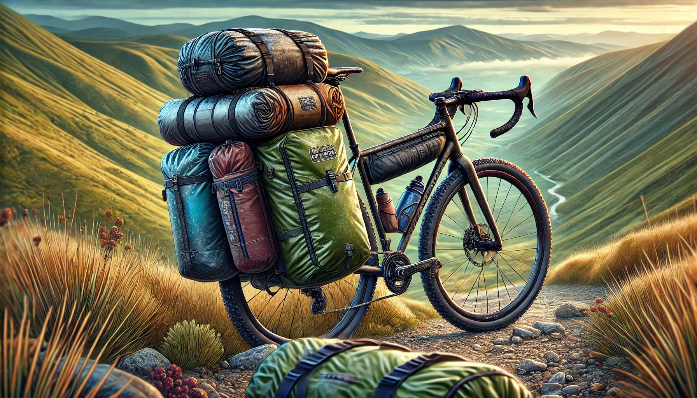

Quando si parla di borse per il bikepacking, la scelta tra waterproof e water resistant non è solo una questione di budget: dipende dal tipo di viaggio, dalle condizioni meteo previste e da cosa devi proteggere.
Protezione totale
- Cuciture saldate, sigillo completo
- Chiusura roll-top anti-infiltrazioni
- Ideale per piogge abbondanti e lunghi tour
- Per elettronica, documenti, sacchi a pelo
Resistenza e versatilità
- Cerniere rivestite, DWR sul tessuto
- Più leggera e flessibile
- Ideale per climi favorevoli e giri brevi
- Complementare a sacchetti interni impermeabili
Waterproof: i materiali
- PVC (Polivinilcloruro): impermeabilità totale, grande resistenza all'abrasione e al tempo. Rigido, non ecologico, pesante.
- TPU (Poliuretano Termoplastico): flessibile, leggero, altamente impermeabile. Può degradarsi con esposizione prolungata ai raggi UV.
- Nylon con rivestimento PU: buon compromesso tra leggerezza, robustezza e impermeabilità. Il rivestimento si consuma con uso intensivo.
Quando sceglierle
Piogge abbondanti previste, attrezzatura elettronica o documenti a bordo, tour di più giorni senza riparo garantito. In queste condizioni, l'impermeabilità totale non è un optional.
Water Resistant: i materiali
- Cordura: estremamente resistente all'abrasione e durevolissima. Offre resistenza moderata all'acqua, non totale.
- Poliestere con trattamento DWR: economico, buona resistenza agli agenti atmosferici leggeri. Il trattamento si deteriora nel tempo e va rinnovato.
- Nylon non rivestito: molto leggero e traspirante. Non impermeabile: richiede protezione aggiuntiva per il contenuto.
Quando sceglierle
Climi favorevoli, percorsi brevi, quando il contenuto si può proteggere con involucri interni impermeabili. Offrono il miglior compromesso tra protezione e leggerezza per chi pedala in condizioni controllate.
Come scegliere
Tre domande da farsi prima di acquistare:
1. Dove vai? Zone umide, montagna, meteo incerto: scegli waterproof. Climi secchi, giri di un giorno: water resistant è sufficiente.
2. Cosa trasporti? Elettronica, documenti, sacco a pelo: impermeabilità totale. Abbigliamento da ricambio, cibo, attrezzi: water resistant con sacchetti interni funziona.
3. Quanto dura il viaggio? Più è lungo, meno puoi contare sul meteo. Per tour di più settimane, investi in waterproof.
Per borse water resistant, puoi usare sacchetti interni impermeabili per proteggere gli oggetti delicati, oppure applicare una cover esterna al bisogno. Bilancia peso e sicurezza: non sempre serve la massima protezione.
Stai pianificando un bike tour?
Passa da DPLab: ti aiutiamo a scegliere le borse giuste per il tuo viaggio e montiamo tutto sulla bici.